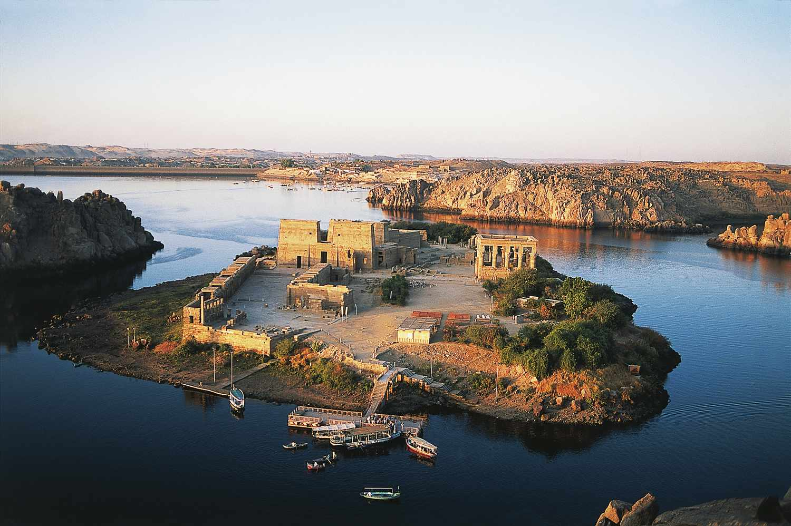

Nile Delta

The Nile Delta is the delta formed in Lower Egypt where the Nile River spreads out and drains into the Mediterranean Sea. It is one of the world's largest deltas. From Alexandria in the west to Port Said in the east; it covers 240 km of the Mediterranean coastline and is a rich agricultural region.
Damietta

Damietta is a port city and the capital of the Damietta Governorate in Egypt. It is located at the Damietta branch, an eastern distributary of the Nile Delta, 15 kilometres (9.3 mi) from the Mediterranean Sea, and about 200 kilometres (120 mi) north of Cairo.
Great Bend of the Nile

The Great Bend of the Nile is a dramatic, S-shaped curve in the river's path in northern Sudan, near the cities of Abu Hamad and Al-Dabba, where the river turns sharply southwest before resuming its northward flow towards Egypt.
Bayuda Desert Nile Corridor

The Bayuda Desert Nile Corridor refers to the area within the great bend of the Nile River in Central Sudan, which has historically served as a vital, yet challenging, pathway for human movement, trade, and settlement between the Nile Valley communities.
First Cataract Region

The First Cataract Region is the area around the First Cataract of the Nile River, located just south of modern-day Aswan, Egypt, historically marking the southern boundary of Ancient Egypt with Nubia (now Sudan).
Philae / Aswan Nile Islands
Philae is a historic island near Aswan, Egypt, famous for its ancient Temple of Isis, which, along with other monuments, was relocated to Agilkia Island to save it from flooding by the Aswan Dams; originally a sacred site for Osiris, it became a major religious center.
Sudd Wetland

The Sudd is a vast swamp in South Sudan, formed by the White Nile's Baḥr al-Jabal section. The Arabic word sudd is derived from sadd, meaning "barrier" or "obstruction". The term "the sudd" has come to refer to any large solid floating vegetation island or mat.
Lake Albert Region

The Lake Albert region is a vital area in East Africa, straddling the border of Uganda and the Democratic Republic of Congo (DRC) within the Albertine Rift (part of the Great Rift Valley), known for its rich biodiversity, significant fishing industry, subsistence farming, and potential oil/mineral resources.
Lake Victoria Source Region

The source region for Lake Victoria, Africa's largest freshwater lake and a key source of the Nile River, includes the extensive drainage basin shared by Uganda, Kenya, Tanzania, Rwanda, and Burundi, with the Kagera River system.